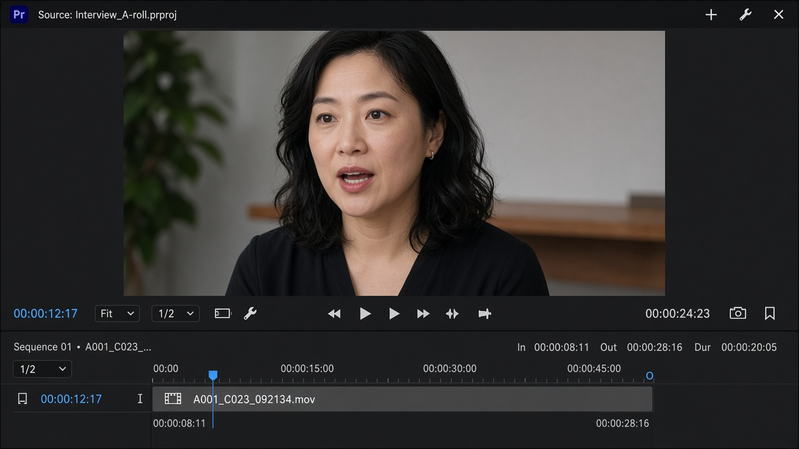
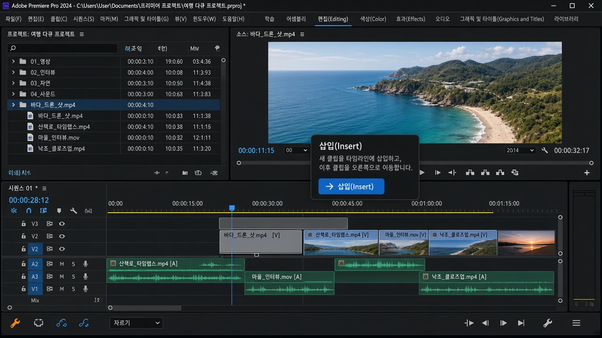

쉼표 ,
Insert 삽입
재생헤드 위치를 벌리고 그 사이에 클립을 넣습니다. 뒤에 있던 컷이 밀려 납니다. 길이가 늘어납니다.
레슨 04
원본 전체를 타임라인에 올리지 않습니다. 인·아웃으로 “이 부분만” 지정한 뒤 넣습니다.

잘못 찍었으면 다시 I / O를 누르면 위치가 바뀝니다. 지우려면 마커 → 인 앤 아웃 지우기 또는 Source에서 우클릭합니다.
시퀀스 재생헤드가 “어디에 넣을지”를 정합니다. 그다음 넣는 방식이 두 가지입니다.
쉼표 ,
재생헤드 위치를 벌리고 그 사이에 클립을 넣습니다. 뒤에 있던 컷이 밀려 납니다. 길이가 늘어납니다.
마침표 .
이미 있는 컷 위에 덮습니다. 전체 길이는 그대로이고, 그 구간만 바뀝니다.
입문 컷편집에서는 대부분 Insert(,)가 안전합니다. Overwrite는 “이 자리의 화면만 바꾸고 싶을 때” 씁니다. 실수로 덮어썼다면 Ctrl+Z.

프로는 보통 Source에서 인·아웃(두 점)을 찍고, 시퀀스에서는 인(한 점, 재생헤드)만 찍습니다. 이것을 세 점 편집이라고 합니다. 마우스로 드래그하는 것보다 빠르고, 쓸데없는 앞뒤 공백이 타임라인에 덜 쌓입니다.